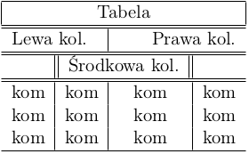

Statystyczny użytkownik myszki komputerowej żyje w przekonaniu, iż stworzenie dokumentu tekstowego wysokiej jakości jest stosunkowo proste. Jest prawdopodobne, że przekonanie to zostało mu zaszczepione przez edytory typu WYSWIG (What You See is What You Get). Klasycznym przykładem takiego programu jest MS Word. Umożliwia on m. in. modyfikację kroju czcionki oraz rozmiaru marginesów w taki sposób aby dokument był przyjemny dla oka. Czy wizualna atrakcyjność dokumentu oznacza jednak, że dokument jest wysokiej jakości? Ciężko powiedzieć… nie napisaliśmy jeszcze co to znaczy “dokument wysokiej jakości”.
Otóż, dokument powinien być tak sformatowany, aby umożliwić czytelnikowi całkowite skupienie się na tekście. Nie powinien zawierać elementów, które rozpraszają lub odwracają jego uwagę od tego co jest najważniejsze – od treści. Aby zrealizować ten cel należy wybrać: krój czcionki (szeryfowa, bezszeryfowa), ustalić liczbę wyrazów w linii (50, 66 a może 80?), dokonać podziału wyrazów, które nie mieszczą się w linii, ustalić położenie wykresów i tabel na kartce papieru (góra, dół) oraz wiele innych. Nie jest to proste, zwłaszcza jeśli zmienimy coś w gotowym tekście wymuszając przesunięcie rysunków i tabel na kartce.
Aby zachować wysoki poziom zasad typograficznych i jednocześnie ułatwić autorowi skupienie się na treści dokumentu stworzono program LaTeX (wł. zestaw makr i instrukcji do obsługi programu TeX). Nazwę LaTeX czytamy la-tech. Program rozdziela funkcję autora od zecera (osoby dokonującej składu tekstu) i zwalnia nas z odpowiedzialności za prawidłową typografię.
Pisanie w LaTeXu w pewnym stopniu przypomina pisanie w języku HTML. “Program” składa się z właściwego tekstu i zestawu instrukcji, które mówią o tym jak nasz tekst ma wyglądać po “kompilacji”. Dzięki ogromnej liczbie pakietów i szablonów dostępnych w systemie LaTeX można tworzyć wiele różnych typów dokumentów. Na dzisiejszych zajęciach skorzystamy z podstawowego typu article.
W celu poszerzenia wiedzy, autorzy polecają pozycję: Nie za krótkie wprowadzenie do systemu LaTeX\(2_{\varepsilon}\).
Przejdziemy teraz do stworzenia pierwszego dokumentu w LaTeXu. Najpierw musimy zadeklarować klasę dokumentu. Robimy to za pomocą polecenia \documentclass[opcje]{typ}, które umożliwia nam wybranie typu dokumentu (article, report, book, letter) oraz dodatkowych opcji, np.
10pt, 11pt, itp.),a4paper, letterpaper),titlepage, notitlepage),onecolumn, twocolumn),oneside, twoside), itd.Opcje ujęte w nawiasy kwadratowe ([ i]) nie są obligatoryjne – jeśli nie zdefiniujemy żadnej, zostaną użyte wartości domyślne.
W edytorze tekstu wpisz poniższy kod:
\documentclass[11pt, a4paper, twoside]{article}
\begin{document}
Stół z powyłamywanymi nogami!
\end{document}zapisz go w pliku z rozszerzeniem .tex, np. dokument.tex i skompiluj za pomocą polecenia
Kompilator utworzy kilka plików, m. in. plik dokument.pdf, który zawiera nasz tekst.
Otwórz plik dokument.pdf i naciesz oczy wynikiem swojej pracy. Ale co to? Okazuje się, że brakuje kilku liter! Podstawowe możliwości LaTeXa nie sięgają bowiem języka polskiego.
Domyślne reguły można (i często trzeba) rozszerzyć wykorzystując dodatkowe pakiety. Przykładowo, kompletną obsługę języka polskiego włączamy dodając pakiety:
\usepackage[T1]{fontenc} - zawiera czcionkę z polskimi znakami,\usepackage[utf8]{inputenc} - definiuje kodowanie (utf8 - Linux, Cp1250 - Windows) znaków w pliku źródłowym,\usepackage[english, polish]{babel} - definiuje język dokumentu,\usepackage{polski} - wymusza polskie reguły składu dokumentu.Pakiety, z których planujemy korzystać umieszczamy w t.zw. preambule: za instrukcją \documentclass, a przed instrukcją \begin{document}. Zmodyfikuj teraz kod źródłowy tak, aby polskie znaki wydrukowały się prawidłowo.
Ponieważ tekst wygląda teraz elegancko, warto pochwalić się swoim osiągnięciem światu. Włącz opcję utworzenia osobnej strony tytułowej i dodaj (za instrukcjami dołączającymi pakiety) instrukcje “sterujące” jej zawartością, np.:
W “ciele” dokumentu (między instrukcjami \begin{document} i \end{document}) umieść instrukcję
i skompiluj ponownie tekst. Sprawdź co się stanie jeśli opcja osobnej strony tytułowej nie będzie włączona.
Rzadko mamy do czynienia z tekstami pozbawionymi struktury logicznej. Przemyślana kompozycja dokumentu pozwala uporządkować treść i ułatwia jej zapamiętanie. W LaTeXu podstawowy podział dokumentu można otrzymać wykorzystując instrukcje:
Podziel wybrany fragment tekstu za pomocą wymienionych poleceń i sprawdź jak działają. Zbuduj teraz spis treści odpowiadający utworzonym rozdziałom. W tym celu dodaj instrukcję
na początku ciała dokumentu.
Tak otrzymany spis treści jest mało interaktywny – możemy dowiedzieć się gdzie jest szukany rozdział, ale przejść do niego musimy sami. W celu automatycznego tworzenia zakładek oraz linków w obrębie spisu treści, które zaprowadzą nas do poszukiwanego fragmentu, należy użyć pakietu:
Pakiet ten pozwala także na umieszczanie linków w tekście. Przykładowo, instrukcja:
zaprowadzi nas do popularnej wyszukiwarki.
Wypunktowania i numeracje uzyskuje się wykorzystując tzw. otoczenia. Charakteryzują się one dwiema instrukcjami: otwierającą \begin{} i zamykającą \end{}. W przypadku listy nieuporządkowanej napiszemy:
Z kolei dla listy uporządkowanej
Utwórz teraz zagnieżdżoną listę:
Dobry tekst naukowy nie może obyć się bez równań i wzorów (chodź znaleźli by się i tacy, którzy twierdzą inaczej). W LaTeXu istnieje kilka sposobów dodawania wyrażeń matematycznych. Podstawowy z nich umożliwia wstawianie wyrażeń w tej samej linii co tekst (z ang. często mówi się inline)
Kolejny sposób to wykorzystanie otoczenia, które pozwala na wyświetlenie równania w osobnym wierszu, np.
Dla utrzymania porządku często warto numerować równania
Aby sprawnie posługiwać się jakimś językiem trzeba znać jego składnię. Przedstawimy teraz podstawowe symbole i techniki wykorzystywane w LaTeXu przy wpisywaniu równań matematycznych.
Greckie litery są jednym z podstawowych elementów. Są dość łatwe do zapamiętania ze względu na zapis “fonetyczny”. Małe litery uzyskamy stosując:
\[
\alpha, \beta, \gamma, \delta, \epsilon, \varepsilon, \zeta, \eta, \theta, \vartheta, \kappa, \lambda, \mu, \nu, \xi, \pi, \rho, \varrho, \sigma, \tau, \upsilon, \phi, \varphi, \chi, \psi, \omega
\]Duże, natomiast:
Indeksy górne i dolne otrzymuje się przez użycie symboli ^ i _:
Zapis pierwiastków wymaga z kolei instrukcji \sqrt{}
Symbol wektora uzyskuje się przez
Podkreślenia i klamry wykorzystywane do komentowania poszczególnych części wzorów:
\[ \overline{x + i \cdot y}\cdot\underline{v - i \cdot w} \]
\[ \underbrace{M_{\mu \nu} + 1}_{\neq 0} \Rightarrow \overbrace{N_{\nu \mu}}^{= 0} \]Nazwy funkcji powinny być zapisane zwykłą czcionką:
a nie pochyloną:
Ułamki piętrowe uzyskujemy przez
Nawiasy możemy wprowadzić wprost
Nie jest to jednak elegancki sposób. W przypadku równań, które wymagają nawiasów różnej wysokości lepiej jest napisać
Całki zapisujemy:
Natomiast sumy:
Tablice (macierze, wyznaczniki itd) zapisujemy stosując otoczenie array.
\[
\left|
\begin{array}{ccc}
a_{11} & a_{12} & a_{13} \\
a_{21} & a_{22} & a_{23} \\
a_{31} & a_{32} & a_{33} \\
\end{array}
\right|
\]Parametry {ccc} oznaczają, że utworzona tablica będzie miała trzy kolumny, z których każda będzie zawierała tekst wyrównany do środka. Dwie pozostałe możliwości to r – wyrównanie do prawej i l – wyrównanie do lewej.
Otoczenie te można także wykorzystać do zapisu warunków
Zapisz poniższe równania wykorzystując system LaTeX. Niektóre symbole, których należy użyć, nie były wprowadzone wcześniej. W sieci Internet można znaleźć listy dostępnych symboli. W naszej pracowni można skorzystać ze strony: https://www.sharelatex.com/learn/Mathematical_expressions
Należy pamiętać, że symbole rzadsze są dostępne dopiero po dołączeniu odpowiednich pakietów. Przykładowo, symbol całki podwójnej \iint uzyskamy po dołączeniu pakietu amsmath.
\[ i\hbar\frac{\partial}{\partial t}\Psi(\vec{r},t)=-\frac{\hbar^2}{2m}\nabla^2 \Psi(\vec{r},t) + V(\vec{r}) \Psi(\vec{r},t) \]
\[ \oint_{\partial \Sigma}\mathbf{B} \cdot \mathrm{dl} = \mu_0 \iint_{\Sigma} \mathbf{J} \cdot \mathrm{d} \mathbf{S} + \mu_0 \varepsilon_0 \frac{\mathrm{d}}{\mathrm{dt}} \iint_{\Sigma} \mathbf{E} \cdot \mathrm{d} \mathbf{S} \]
\[ \mathrm{Var} \left(\hat{Z}(x_0)-Z(x_0)\right) = \] \[ =\underbrace{c(x_0,x_0)}_{\mathrm{Var}(Z(x_0))}- \underbrace{ \left( \begin{array}{c} c(x_1,x_0) \\ \vdots \\ c(x_n,x_0) \\ \end{array} \right) \left( \begin{array}{ccc} c(x_1,x_1) & \cdots & c(x_1,x_n) \\ \vdots & \ddots & \vdots \\ c(x_n,x_1) & \cdots & c(x_n,x_n) \end{array} \right)^{-1} \left( \begin{array}{c} c(x_1,x_0) \\ \vdots \\ c(x_n,x_0) \end{array} \right)}_{\mathrm{Var}(\hat{Z}(x_0))} \]
Istnieje wiele bibliotek rozszerzających możliwości tworzenia tabel w systemie LaTeX. Pokarzemy najprostszy przykład z wykorzystaniem otoczenia tabular. Otoczenie to tworzy tabelę w sposób automatyczny, tzn. szerokości i wysokości poszczególnych komórek są dobierane do ich zawartości. Jedyne parametry na jakie mamy wpływ to liczba kolumn i sposób ich justowania. Przeanalizuj poniższy kod:
\begin{tabular}{l||c|c|c}
& symb. & symb. & symb. \\ \hline \hline
symb. & X & O & O \\ \hline
symb. & O & X & X \\ \hline
symb. & X & O & X \\
\end{tabular}Jaki wpływ na wygląd tabeli ma parametr {l||c|c|c}?
Otoczenie tabular pozwala także na tworzenie wielokolumnowych rubryk. Służy do tego polecenie \multicolumn{l_kolumn}{justowanie}{tekst}.
\begin{tabular}{c|c|c}
\multicolumn{3}{c}{symb.} \\ \hline \hline
X & O & O \\ \hline
O & X & X \\ \hline
X & O & X \\
\end{tabular}Użycie powyższej konstrukcji ma pewną wadę. Tabele dodane do dokumentu za pomocą otoczenia tabular nie zawsze znajdą się tam gdzie byśmy tego chcieli. Aby mieć kontrolę nad położeniem tabeli należy użyć otoczenia table, które ma jeden argument opcjonalny mówiący o tym gdzie na stronie ma się znaleźć wstawka z tabelą. Dodatkowo, otoczenie to pozwala na dodanie podpisu do naszej tabeli. Służy do tego instrukcja \caption{podpis}. Przykładowo, jeśli chcemy aby tabela znalazła się dokładnie w miejscu użycia, napiszemy:
\begin{table}[h]
\begin{tabular}{c|c|c}
X & O & O \\ \hline
O & X & X \\ \hline
X & O & X \\
\end{tabular}
\caption{Kółko i krzyżyk.}
\end{table}Pozostałe parametry to:
t – umieść wstawkę na górze strony,b – umieść wstawkę na dole strony,p – umieść wstawkę na oddzielnej stronie ze wstawkami.Wykonaj poniższą tabelę:

Wstawienie grafiki w \(LaTeX u\) ogranicza się do dołączenia pakietu \usepackage{graphicx} oraz użycia instrukcji \includegraphics[parametry]{sciezka_do_grafiki}. Przykładowo, jeśli chcemy wstawić obrazek, którego szerokość będzie równa 95% szerokości tekstu napiszemy:
Podobnie jak to było w przypadku tabel, kontrolę nad położeniem rysunku i możliwość dodawania podpisów otrzymamy po zastosowaniu specjalnego otoczenia. W przypadku grafiki będzie to otoczenie figure:
System LaTeX umożliwia wstawienie odwołania do niemal każdego obiektu posiadającego numer. Oznacza to, że możemy odwołać się do dowolnego rozdziału, równania, tabeli czy rysunku. Obiekt, do którego planujemy się odwołać oznaczamy za pomocą polecenia \label{nazwa_obiektu}. Natomiast w miejscu, w którym odwołujemy się, wstawiamy polecenie \ref{nazwa_obiektu}. Zamiast numeru obiektu, możemy podać stronę, na której znajduje się dany element. W tym celu stosujemy polecenie \pageref{nazwa_obiektu}. Stosując indywidualne nazwy obiektów, nie musimy martwić się o ewentualne zmiany numeracji wynikające z pracy nad tekstem. LaTeX zajmie się koniecznymi modyfikacjami.
Przykładowo, aby odwołać się do rozdziału piszemy:
W celu odwołania się do tabeli:
\begin{table}[h]
\begin{tabular}{c|c|c}
X & O & O \\ \hline
O & X & X \\ \hline
X & O & X \\
\end{tabular}
\caption{Kółko i krzyżyk.}
\label{kik}
\end{table}
Tabela \ref{kik} zawiera przykładową partię w kółko i krzyżyk.
Znajduje się ona na stronie \pageref{kik}.Stwórz odwołania do pozostałych obiektów użytych w trakcie ćwiczeń (równań i rysunków).